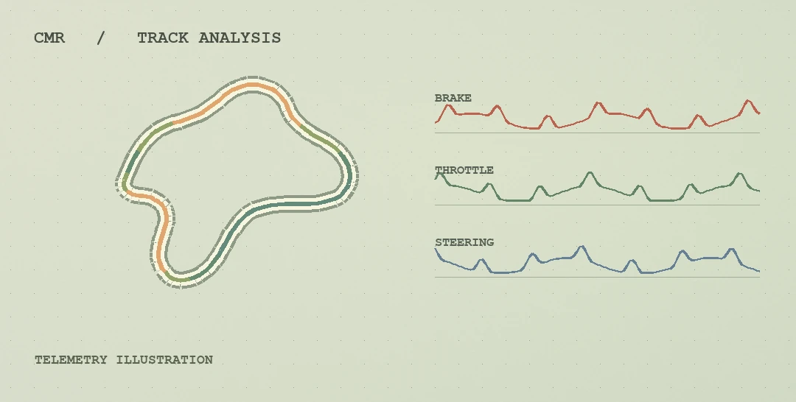

CMR Telemetry
Putting brake, throttle, and steering data on one timeline for Carnegie Mellon Racing.

A shared timeline
With Carnegie Mellon Racing, I build analysis software for our Formula SAE car. We record millions of sensor samples, but the channels run at different rates. I align them so the team can see how the car responds to a driver’s inputs.
Finding the right corner
I developed automatic lap and driving-segment detection to break long recordings into sections engineers and drivers can compare. Synchronized traces and track heatmaps let us connect a change in brake pressure or steering angle to a specific part of a run.